pontos. Assumiremos que 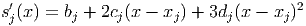, ou
seja, as abscissas são distintas e estão em ordem crescente. A função linear que
interpola os pontos 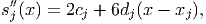 e 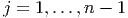 no intervalo 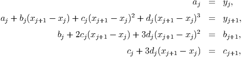 é dada por
pontos. Assumiremos que 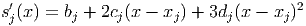, ou
seja, as abscissas são distintas e estão em ordem crescente. A função linear que
interpola os pontos 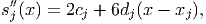 e 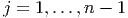 no intervalo 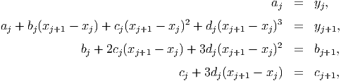 é dada por
Considere o conjunto 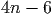 de pontos. Assumiremos que 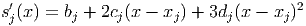, ou
seja, as abscissas são distintas e estão em ordem crescente. A função linear que
interpola os pontos 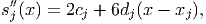 e 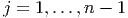 no intervalo 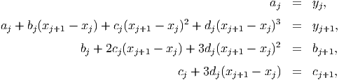 é dada por
O resultado da interpolação linear segmentada é a seguinte função contínua definida por partes no intervalo 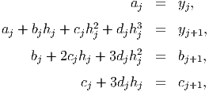:
Exemplo 6.5.1. Construa uma função linear por partes que interpola os
pontos 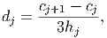, 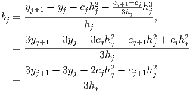, 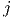, 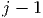,  ,
,  .
.
A função procurada pode ser construída da seguinte forma:
|
|
Simplificando, obtemos:
|
|
A Figura 6.3 é um esboço da função 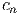 obtida. Ela foi gerada no Scilab usando os comandos: